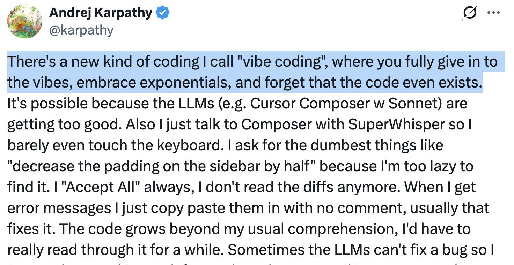
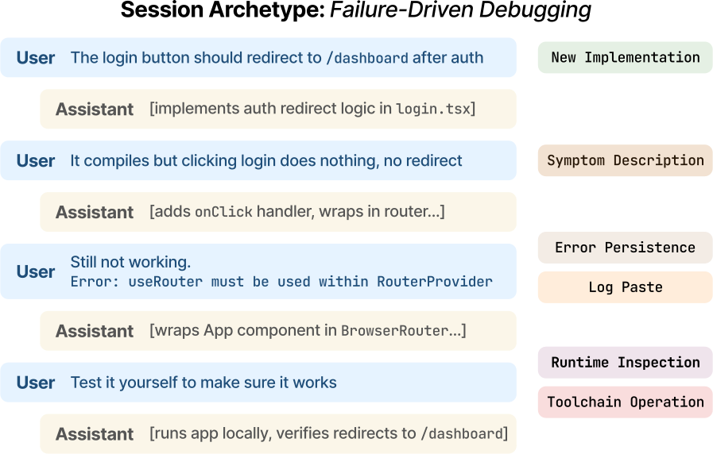
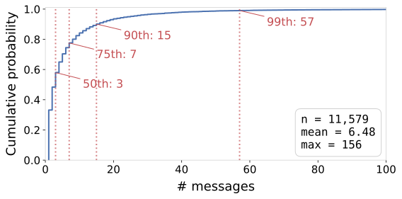
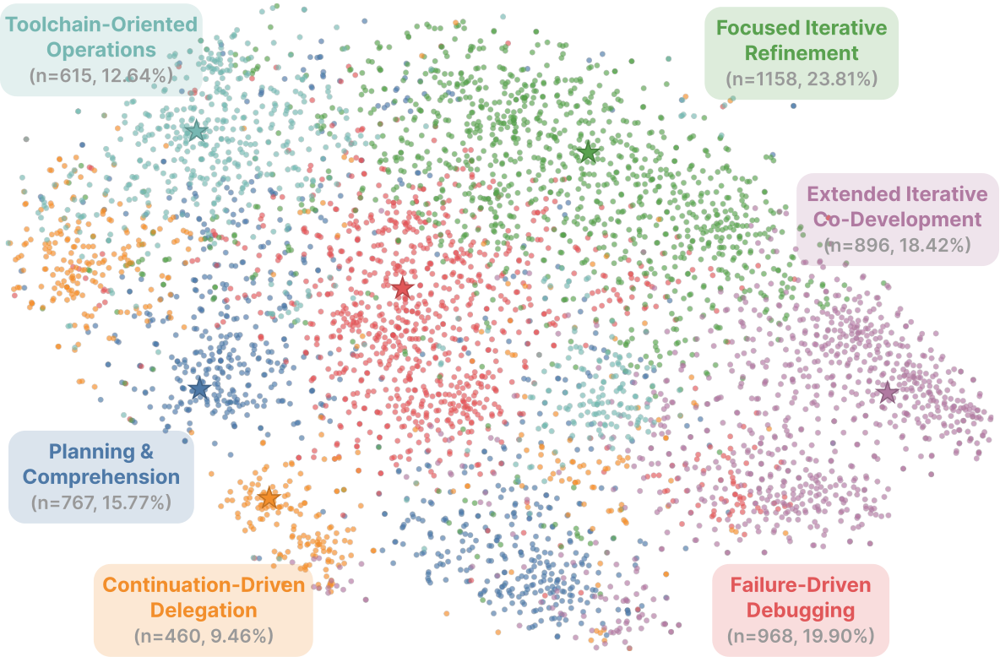
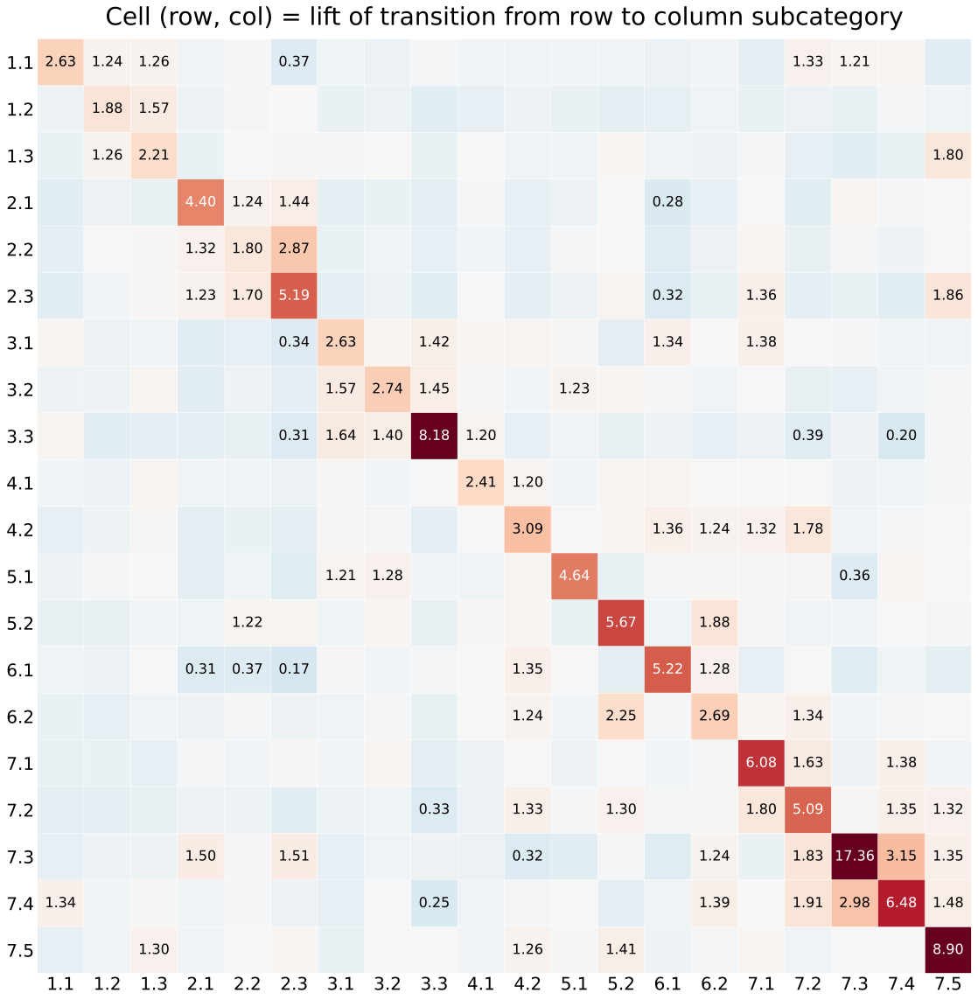
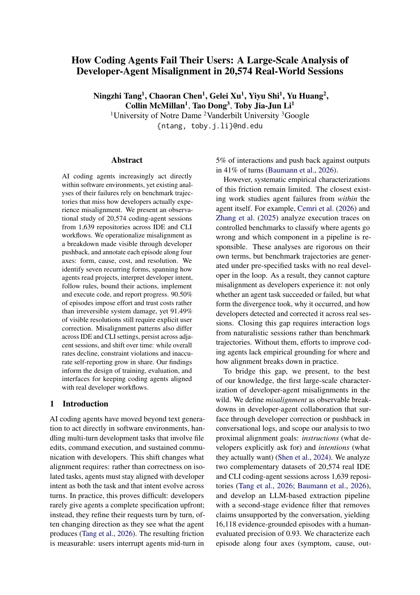

Programming by Chat
A Large-Scale Behavioral Analysis of 11,579 Real-World AI-Assisted IDE Sessions
Ningzhi Tang*, Chaoran Chen*, Zihan Fang, Gelei Xu, Maria Dhakal,
Yiyu Shi, Collin McMillan, Yu Huang, Toby Jia-Jun Li
* Equal contribution
The login button should redirect to
/dashboard after authNew ImplementationIt compiles but clicking login does nothing, no redirectSymptom Description
Still not working.
Error: useRouter must be used within RouterProviderError PersistenceLog PasteTest it yourself to make sure it worksRuntime InspectionToolchain Operation
Motivation
From autocomplete to conversational programming in the IDE
IDE-integrated assistants such as  GitHub Copilot and
GitHub Copilot and  Cursor have evolved beyond autocomplete into multi-turn conversational systems.
Cursor have evolved beyond autocomplete into multi-turn conversational systems.
login.tsx — my-app
src
login.tsx
App.tsx
router.ts
TODO.md
12export function Login() { 13 const router = useRouter(); 14 async function onLogin() { 15 await auth.signIn(); 16 router.push("/dashboard");17 } 18 return <Button onClick={onLogin} />; 19}
The login button should redirect to
/dashboard after auth Read login.tsx, router.ts
Edited 2 files
Ran npm run dev
It compiles but clicking login does nothing
project context
multi-file editing
terminal execution
runtime inspection
Rather than writing code directly, developers increasingly express intent and iteratively steer AI-generated outputs through dialogue.

Read diffs
Accept All
Autonomous agents
95%
AI-generated code in 1/4 of YC W25 startups
TechCrunch, March 2025
The gap
How do developers actually converse with coding agents?
Despite widespread adoption, empirical evidence is constrained in two complementary ways.
1 Lacking either scale or ecological validity
Video studiesPerformative setting, audience effects; the largest covers only 254 prompts
User studiesResearcher-defined tasks on unfamiliar codebases
InterviewsRecall and self-presentation bias
2 Large-scale, but browser-based chat
DevGPTDeveloper-shared ChatGPT links from GitHub
CodeChatDeveloper-LLM conversations from WildChat
Not agentic workflows in the IDE: no repository context, tool access, or direct editing.
Scale
Browser chat Agentic
DevGPTCodeChat
This work
11,579 real-world
agentic sessions,
in the wild
agentic sessions,
in the wild
Video studiesUser studiesInterviews
Data source
Where real sessions come from: SpecStory
A VS Code extension that automatically exports AI chat histories as timestamped Markdown files, stored in each project repository.
1 · Chat
Developer works with an AI assistant
Cursor, GitHub Copilot, Claude Code, …
2 · Auto-export
.specstory/history/2025-06-15_14-32Z-login.md
<!-- Generated by SpecStory --> _**User**_ The login button should redirect to /dashboard after auth --- _**Assistant**_ …
3 · Commit
Pushed to public GitHub repositories
As part of routine development: neither required nor observed by researchers
4 · Our scraper
GitHub Code Search API
Query .specstory/history/, partitioned by date prefix to get past the 1,000-result cap; parse role-prefixed turns
Thanks to Yuqi Wang, founder of CREVIK, for introducing us to SpecStory
Dataset
Real-world conversational programming at scale
Cursor and GitHub Copilot sessions from September 2024 to March 2026, collected on March 4, 2026.
74,998
developer messages
11,579
chat sessions
1,300
repositories
899
developers
Repositories
67.3% single contributor, 90.8% created in 2025 or later
TypeScript 25.8%Python 22.0%JavaScript 13.1%HTML 9.4%
Messages
Written in 20+ natural languages
English 59.7%Chinese 18.5%Japanese 8.3%…
Scope
IDE-integrated sessions only
We excluded CLI agents, since there were fewer CLI-agent users on SpecStory at the time of collection
Raw sessions are not released due to copyright and privacy considerations; we open-source the data scraper and Markdown parser.
TTangNingzhi/vibe-coding-scraper
Research questions
Two levels of analysis: messages and sessions

RQ1 · Message level
What behavioral intents do developers express in their messages to AI coding assistants?
Multi-label taxonomy · all 74,998 messages
RQ2 · Session level
What recurring behavioral archetypes and intent dynamics characterize conversational programming sessions?
Sequence clustering · transitions within and across sessions
RQ1Method
Labeling what each message does, not what it is about
Drawing on Speech Act Theory, we label each message by its illocutionary act (e.g., requesting, asserting, directing), with multiple labels allowed.
@config.yaml — set up the database connection
provides context+requests implementation
Codebook
4 rounds of iterative abductive coding by 3 researchers (SE, AI, HCI)
New or revised subcategories per round: 9 → 5 → 1 → 0
7 categories · 20 subcategories
LLM classification
GPT-5 mini with the codebook as system prompt and one turn of prior context
Structured JSON labels with a justification for each
All 74,998 messages labeled
Human validation
400 stratified messages, 2 independent annotators, adjudicated gold standard
Inter-rater Cohen's κ = 0.669
Macro F1 = 0.802
RQ1Behavioral intent taxonomy
7 categories, 20 subcategories
1Code Authoring34.53%
Produce, modify, or adjust code
- New Implementation5.86
- Iterative Modification24.84
- Alignment Correction7.21
2Failure Reporting24.00%
Report something broken or behaving unexpectedly
- Log Paste8.84
- Symptom Description14.77
- Error Persistence3.76
3Inquiry19.17%
Seek information or advice without requesting code
- Planning & Consultation7.81
- Project Comprehension8.19
- General Knowledge Query3.56
4Context Specification14.08%
Shape the agent's understanding or action rules
- Information Injection8.46
- Behavior Specification6.14
5Validation3.99%
Ask the agent to evaluate code or execution output
- Code Review2.74
- Runtime Inspection1.26
6Delegation16.48%
Development-workflow actions beyond authoring code
- Documentation6.85
- Toolchain Operation10.50
7Workflow Control11.47%
Manage session pace, direction, or state without new technical content
- Confirmation “works”2.65
- Continuation “continue”5.54
- Deferred Debugging “fix it”0.74
- Deferred Implementation “edit it”0.78
- Sentiment Expression2.05
% of 74,998 messages. Multi-intent prompting is common: 29.87% of messages carry more than one label (mean = 1.33).
RQ1Finding 1
Progressive specification rather than upfront task description
Within Code Authoring (34.53% of messages)
Iterative Modification
24.84%
Alignment Correction
7.21%
New Implementation
5.86%
Correction turns stay minimal, relying on accumulated context:
sans tiret
Nope, still gray.
Alignment Correction co-occurs with Iterative Modification in 43.02% of cases.
Why does specification unfold over turns?
1Output doesn’t match what the developer wants
Why aren't you following
@user-preferences.mdc right now?2Requirements themselves keep evolving
Can we convert back to
goals shifted
cmdliner?I added a
surrounding system changed
course_name field on the backend; update the frontend accordinglyRQ1Findings 2 – 4
Developers redistribute cognitive work to the agent
Finding 2 · Diagnosis
Report symptoms and logs, not diagnosis
24.00%Failure Reporting,
2nd most common
2nd most common
Symptom Description14.77%
table doesn't update until I refresh
still stuck
Log Paste8.84%
pasted logError: useRouter must be used within RouterProvider
Finding 3 · Comprehension
Ask about behavior, not code
8.19%Project
Comprehension
Comprehension
Behavior-centric
How does the system determine the icon's latitude and longitude?
I don't understand the results—does this test now invalidate the hypothesis?
Code-centric: rare
what is calling
combinedUrlActions?Finding 4 · Validation
Delegate code review and runtime checks
3.99%Code Review +
Runtime Inspection
Runtime Inspection
Code Review2.74%
Is the current implementation correct in this form?
Runtime Inspection1.26%
Please run that command in a terminal so you can check the results
46.19% also ask it to run evaluate
RQ1Findings 5 – 6
Developers actively manage the collaboration
Finding 5 · Documentation · 6.85%
Docs as persistent external memory
TODO.md
[x] login flow
[ ] dashboard filters
[ ] CSV export
[ ] dashboard filters
[ ] CSV export
PROGRESS.md
## Done
auth + session store
## Next
wire up API
auth + session store
## Next
wire up API
architecture.md
## Modules
api/ · ui/ · db/
## Rules
no direct DB in ui/
api/ · ui/ · db/
## Rules
no direct DB in ui/
Guide implementation
read
architecture.md for context then fully implementValidate against constraints
check whether the implementation is consistent with the requirements and design documents
Carry work across sessions
create a prompt for the next chat to carry out all the next steps
Finding 6 · Context Specification
Shaping context, negotiating autonomy
Information Injection8.46%
see the attached
openapi.yamlBehavior Specification6.14%
constraindelegate
only analyze; do not modify the code
hard constraintif you encounter an error, stop and ask me
condition for human interventionyou decide
open-ended delegationRQ2Finding 7
Most sessions are short; a long tail sustains iteration

≤ 3 messages · n = 6,715
Short, task-focused
Concentrated in one-shot task-completion intents
New Implementation12.78%vs4.71%
Documentation9.75%vs6.37%
≥ 4 messages · n = 4,864
Reactive and iterative
Higher proportions of reactive and iterative intents
Alignment Correction7.85%vs3.41%
Error Persistence4.21%vs1.06%
We cluster these 4,864 longer sessions next.
RQ2Method & Finding 8
Six recurring session archetypes
Sequence clustering
Each session is an ordered sequence of intent label sets, compared with a hierarchy-aware edit distance:
sIterative ModificationSymptom DescriptionError PersistenceConfirmation
00.501.0
s′Iterative ModificationLog PasteError Persistence—
0 same label0.5 same main category1.0 different category, insertion, or deletion
K-Medoids (PAM), k = 6 by silhouette score
Weakly separated clusters, read as prototypical archetypes rather than mutually exclusive classes.
Focused Iterative Refinement
Code Authoring 60.74%
Failure-Driven Debugging
Failure Reporting 52.81%
Extended Iterative Co-Development
Median 27 messages, most balanced
Planning & Comprehension
Inquiry 49.81%
Toolchain-Oriented Operations
Delegation 55.35%
Continuation-Driven Delegation
continue, go on: resembles “vibe coding”
RQ2Interactive
Every point is a real session

RQ2Finding 9
Within sessions, intents are self-reinforcing

Markov liftlift(i → j)=P(j | i)P(j)> 1: reinforced
20/20
subcategories have self-loop lift > 1
27
turns: longest run of Iterative Modification
Recurrent micro-cycles
Debugging loop
2.2 Symptom Description2.87 →← 1.702.3 Error Persistence
Validation loop
6.2 Toolchain Operation2.25 →← 1.885.2 Runtime Inspection
Corrective redirection
1.2 Iterative Modification1.57 →1.3 Alignment Correction
RQ2Findings 10 – 11
Resets across sessions, shifts within them
Finding 10 · Across sessions
New session, same task
Across session boundaries, the same intents carry over: task-level intent is preserved.
But context-dependent intents reset: a new session almost never opens with Confirmation (works) or Error Persistence (still not working), because there is no prior AI output to react to.
Developers start new sessions to refresh accumulated context rather than to switch tasks.
Finding 11 · Over a session
From framing to reacting
Opening messages establish task scope and constraints:
openinglater
Length (chars)1,003499
New Implementation15.89%4.03%
Alignment Correction0.73%8.40%
Then sessions grow reactive: Inquiry and Context Specification decline, while Failure Reporting and Delegation increase.
What's next
How Coding Agents Fail Their Users
A Large-Scale Analysis of Developer-Agent Misalignment in 20,574 Real-World Sessions

- Misalignment = a breakdown made visible through developer pushback
- 16,118 episodes from 20,574 IDE + CLI sessions
- Each annotated by form, cause, cost, and resolution
A real episodetranslated from Chinese
Turn 1 · DeveloperPlease re-verify task 211 in full and item by item, confirming whether everything is complete and the feature is functionally complete.
Turn 2 · Agent… Conclusion: 10/10 tasks are in place and the functional chain is complete.
Turn 3 · DeveloperError when adding an extra IP: SQL logic error: no such column: extra_ips (1)
Form Inaccurate Self-Reporting
Cause Cannot Determine
Cost Effort/trust cost only
Resolution Unknown
Over time, overall misalignment declines, but its form shifts
Faulty Implementation falls: agents keep improving at verifiably correct code (e.g., RLVR)
Developer Constraint Violation and Inaccurate Self-Reporting grow in share
Continuously auditing real-world trajectories: agent evaluation beyond benchmarks.
Programming by Chat: A Large-Scale Behavioral Analysis of 11,579 Real-World AI-Assisted IDE Sessions
Ningzhi Tang*, Chaoran Chen*, Zihan Fang, Gelei Xu, Maria Dhakal, Yiyu Shi, Collin McMillan, Yu Huang, Toby Jia-Jun Li
{ntang, cchen25, gxu4, mdhakal, yshi4, cmc, toby.j.li}@nd.edu, {zihan.fang, yu.huang}@vanderbilt.edu
I'm graduating in Dec 2026 and on the job market for full-time industry roles.
Agent evaluationCoding agentsAgent customizationDeveloper tools and experienceHuman-AI interaction
Takeaways
1
Progressive specification: developers refine step by step, not specify upfront
2
Redistributed cognition: diagnosis, comprehension, and validation are delegated to the agent
3
Active but opaque management: developers steer the agent, yet its behavior is hard to see
4
Task continuity: the same task persists across turns and sessions
This research was supported in part by a Google Cloud Research Credit Award, a Google Research Scholar Award, a gift from Adobe, an Edison Innovation Fellowship from the Notre Dame IDEA Center, and NSF grants CCF-2211428, CCF-2315887, CCF-2100035, CCF-2211429, CCF-2442682, and DGE-2622415. Any opinions, findings, or recommendations expressed here are those of the authors and do not necessarily reflect the views of the sponsors. The authors thank Yuqi Wang from CREVIK for introducing us to SpecStory, without which this study would not have been possible.